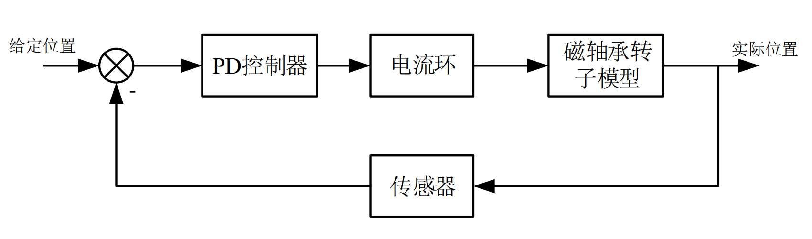

传感器模型¶
AMB_Simulation_Lib/Sensor/sensor.mlx
AMB_Simulation_Lib/Sensor/sensor.slx
1 电涡流传感器模型¶
电涡流传感器探头部分是一个高频线圈，产生一个高频的信号作用于测量的物体上，当被测物体靠近探头时，被测物体由于电磁感应原理会产生涡流，与探头部分的高频磁场方向相反，由于涡流效应，涡流场反作用于探头线圈，使探头部分的电流发生变化，从而影响探头谐振部分的信号变化，进而将位置信号转变为电信号进行控制。
电涡流传感器探头线圈和被测物体存在涡流效应，分别用原副边线圈表示，近似等效，由电路图可写出电路方程：
解得
可得到线圈的等效阻抗和电感的表达式
从上式可以看出，在涡流传感器测量过程中，互感系数M与电感值和阻抗都成二次函数，而探头线圈与互感系数之间又成非线性关系，故电涡流传感器的测量原理决定着在测量过程中存在非线性误差。
2 检测线圈谐振回路模型¶
电涡流传感器分为振荡源、调理电路、滤波电路等结构。测量线圈常采用恒频调幅式的结构。振荡源部分对检测线圈谐振回路提供一个稳频稳幅的激励信号。滤波、信号调整以及功放输出电路部分可以通过选择高频元件和优化电路设计来提高响应带宽。组成电涡流传感器的几个主要部分中,检测线圈的性能对传感器动态响应起着决定作用。检测线圈并联谐振回路的动态响应特性是影响传感器动态响应的主要因素之一。恒频调幅式电涡流位移振动传感器检测线圈谐振回路和被测体之间等效模型如图所示。U_1为检测电路输出电压，L_1为传感器探头线圈等效电感，L_2为被测物体等效电感，R_2为导体内能效电阻，C为并联谐振电容，R_0为分压电阻，U_0为激励信号电压。
传感器处于工作状态下,检测线圈谐振回路实质上是一个二阶振荡回路。恒频调幅的信号的幅值变化情况直接反映了转子位移的变化情况。
由基尔霍夫定律可得到：
这是一个二阶常系数线性齐次微分方程。设U_1=Ae^{\lambda t}，则得到特征方程：
特征根为：
所以有
\lambda_1,\lambda_2由电路的参数决定，假设t=0时，U_1=U并且电路中电流为零，有
由于传感器处于工作状态时，整个回路处于接近谐振状态的振荡回路，所以是一队共轭复数，若定义：
可以求出
U_1是一个振荡衰减的信号，如果电涡流传感器U是一个正弦信号，当U发生变化时，U_1的响应时间由时间常数\frac{1}{\delta}=2\frac{L_1}{R_1}决定。检测线圈谐振回路的相应特性可以用一个一阶惯性系统来表示，U_1相应带宽的上限截止频率应为：
3 检波电路模型¶
电涡流传感器中最常见的检波方式是倍压检波，检波电路将交流电压信号幅值变化转化为相应的直流电压信号，在之后还可增加滤波电路对信号进行处理。该电路的时间常数为\frac{1}{R_2C}，可以用一个一阶惯性环节来表示。
电涡流传感器的传递函数可以表示为：
由此可见，电涡流传感器的动态特性主要由检测线圈谐振回路和检波回路决定的。根据传感器的传递函数可以得到电涡流传感器的频率响应特性曲线
%% 传感器参数
R1 = 4; %探头线圈内阻Ω
L1 = 4.5e-5; %线圈电感H
R = 1e3; %检波电路电阻Ω
C2 = 4e-10; %检波电路电容F
%% 传感器模型动态响应特性图
GH = tf([1],[2*L1*R*C2/R1 , 2*L1/R1+R*C2 , 1 ])
bode(GH);
grid on;
%% 传感器模型动态响应特性图
GH = tf([1],[2*L1*R*C2/R1 , 2*L1/R1+R*C2 , 1 ])
bode(GH);
grid on ;
hold on;
电涡流传感器的动态响应特性由，测量探头和检测电路的参数决定，通过对探头谐振参数的选择可以改变传感器的响应带宽，但是还需综合考虑传感器的灵敏度，稳定性等影响。
4 传感器带宽对控制系统的影响¶
在实际应用中，由于传感器有带宽上限，因为探头谐振回路参数和检波电路等因素的影响，因此当传感器带宽有限时，我们需要分析其对整个控制系统性能的影响。考虑传感器带宽后的系统控制框图如图所示

先考虑简化模型，将传感器环节以及功放环节忽略。考虑被控后的系统表现与一个机械弹簧类似，存在刚度k以及阻尼d，有：f=-kx-d\dot{x}，并与之前的磁轴承力线性化表达式联立，得到控制电流的表达式为：
采用PD控制对系统的控制效果主要取决于设计系统的刚度以及阻尼的大小。对于系统刚度，一般选择与磁轴承位移系数k_x处于一个数量级，而系统的阻尼选择则与系统刚度相关，一般选择d=2\sqrt{mk}。 位置控制采用PD控制，电流环等效为一个一阶惯性环节，传感器等效为一个一阶环节。加入传感器模型后系统的开环传递函数为：
%% 系统参数
R1 = 4; %线圈内阻Ω
L1 = 4.5e-5; %线圈电感H
t = R1/2*L1; %传感器带宽
R = 1e3; %检波电路电阻Ω
C2 = 4e-10; %检波电路电容F
wc = 500*pi; %电流环带宽rad/s
ks = -2.6e6; %力位移系数N/m
ki = 260; %力电流系数N/A
m = 10; %转子质量kg
P、D参数基于磁轴承电流控制表达式得到，电流环带宽选为500Hz，其他参数均为实验平台具体参数。得到系统在增加传感器模型后特征根的变化图。
首先考虑传感器参数确定时传感器带宽对系统稳定性的影响。
%% 未加传感器模型时系统特征根的变化
L1=0;
for k=-ks:-ks:-100*ks
P = (k+ks)/ki;
D =2*sqrt(m*k)/ki;
G=tf([D*wc*ki,wc*ki*P],[2*m*L1/R1, wc*m*2*L1/R1+m , ks*2*L1/R1+wc*m, wc*ks*2*L1/R1+ks , wc*ks]);
r= rlocus(G,1);
plot(real(r),imag(r),'*b');
hold on;
end
grid on;
取传感器的带宽从500Hz到20kHz，当传感器带宽小于600Hz时，特征根出现在复平面的右半平面，整个系统不稳定，带宽越大，加入传感器模型后系统的特征根位置与之前的系统越接近。
加入传感器模型后，系统特征方程在负实轴上多了一个特征根，但远离虚轴，对系统性能影响不大。 当传感器带宽不变时，位置环控制参数变化时。
%% 加入传感器模型后系统特征根的变化
L1 = 4.5e-5;
t = 1e4*pi;
for k=-ks:-ks:-100*ks
P = (k+ks)/ki;%I =
D =2*sqrt(m*k)/ki;
G = tf([D*wc*ki, wc*ki*P] , [m/t , wc*m/t+m , ks/t+wc*m, wc*ks/t+ks , wc*ks]);
r= rlocus(G,1);
plot(real(r),imag(r),'or');
hold on;
end
grid on;
设置传感器带宽5kHz，取位置环刚度k从|k_x|取值到100倍|k_x|。由于传感器模型的加入，主要影响系统性能的两个特征根从k=5|k_x|开始与之前的系统有了明显的偏离，说明系统受到电流环的影响逐渐增大，当系统刚度增加到k=28|k_x|时，特征根出现在了复平面的右半平面，系统失稳。
从上面的分析可得，传感器带宽越高，也就是传感器品质因数越小，对系统性能的影响越小，并且系统的刚度越高，对传感器的带宽要求就越高。因此在设计磁轴承系统时，传感器需要合适的带宽，同时，轴承的刚度需根据实际系统进行选取，不宜取太高。